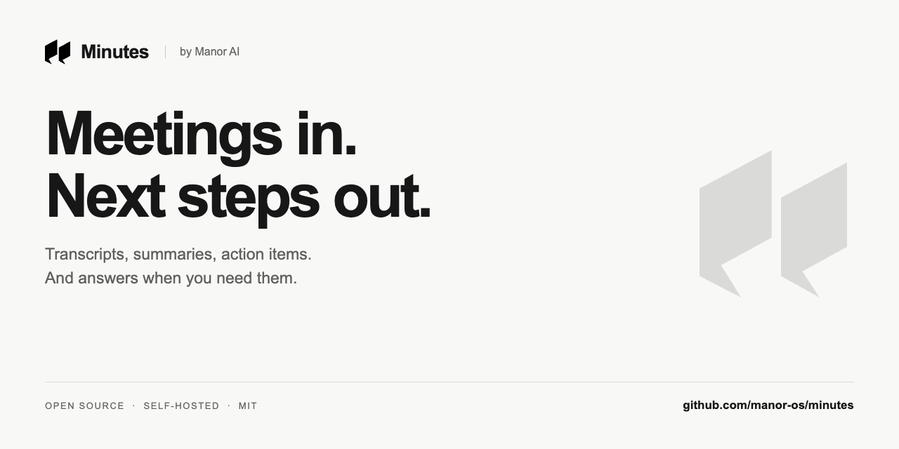
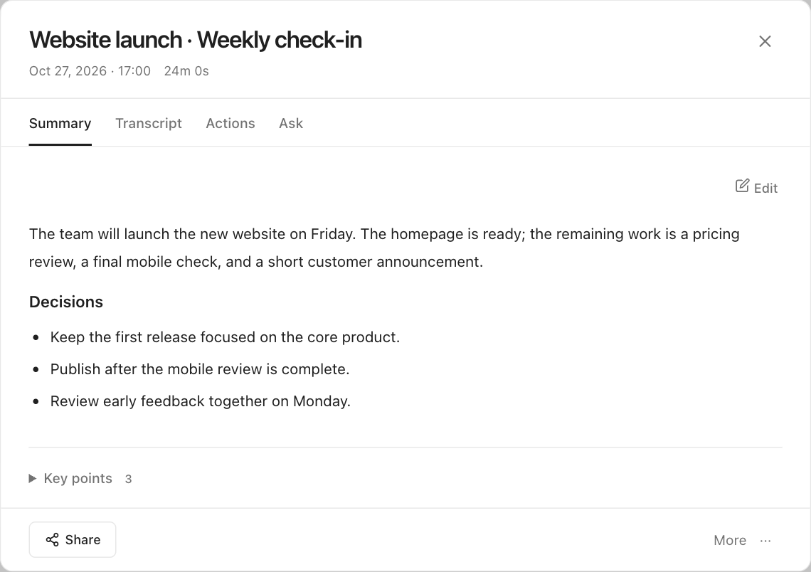
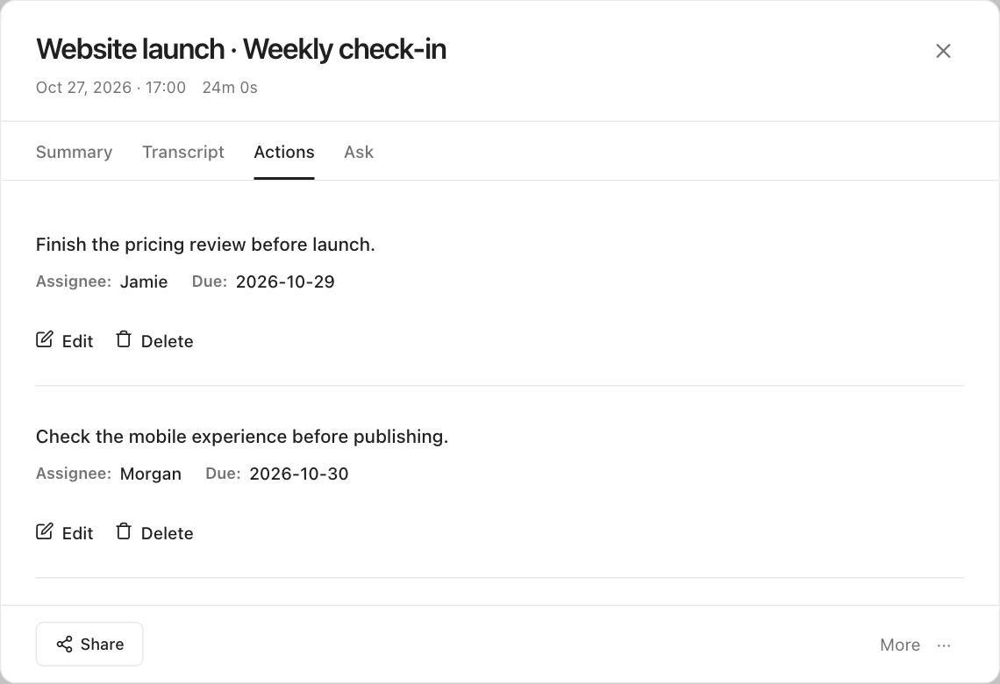
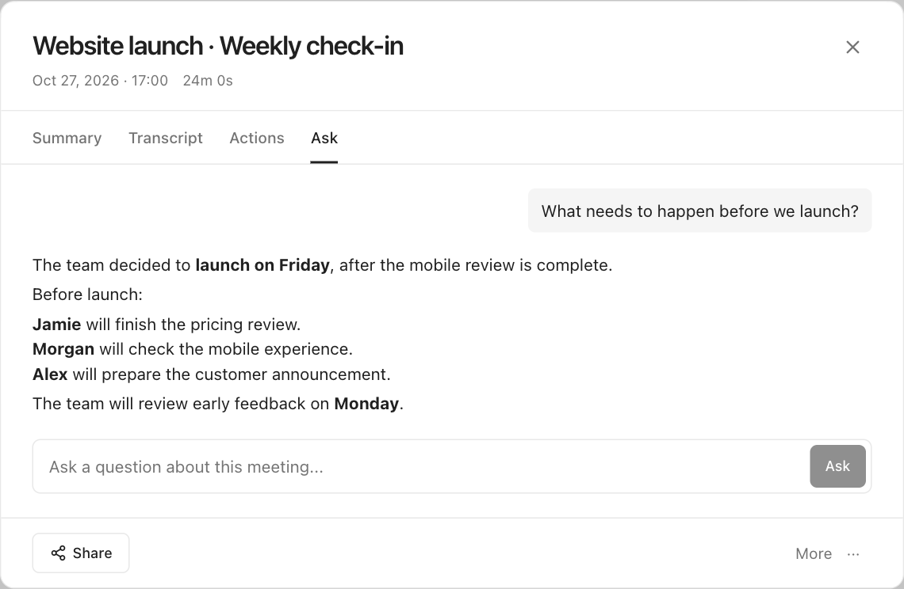

Minutes
GitHub 材料 · 待合并与发布Meetings in. Next steps out.
以在线体验为主要入口，同时提供 Community 开源版。这里是中英文介绍、仓库文档、发布文案与黑白视觉素材。

直接使用的材料

仓库简介
Open-source meeting notes: record, transcribe, summarize, and ask questions. Self-host with local models or your own API keys. Hosted app by Manor AI.
开源会议纪要：录音、转写、总结与问答。支持自托管、本地模型或自备 API key，也可直接使用 Manor AI 提供的在线版。
Community 界面
从公开仓库代码重新构建；演示会议与 AI 回答均为模拟数据。



发布范围
公开仓库与在线版独立发布。README 已列明在线版的 43 种输出语言、Manor 任务和 MCP 集成与 Community 的差异。文案没有承诺尚未上线的试用兑换，也没有把模拟截图当作模型质量测试。
构建、截图、链接和 Compose 配置检查记录见 验证说明；素材来源见 素材清单。Release 文案仍是草稿，仓库 About 和分享图设置需要另行应用。